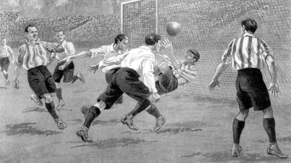
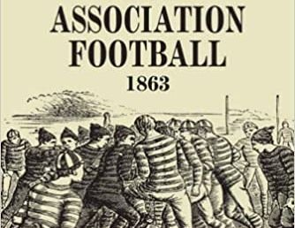

El fútbol es uno de los deportes más populares del mundo y su origen se remonta a varios siglos atrás, cuando distintas civilizaciones practicaban juegos en los que se utilizaban los pies para golpear una pelota. Uno de los antecedentes más antiguos fue el *cuju*, un juego originario de China que se practicaba hace más de dos mil años y que consistía en patear una pelota hacia una abertura. También existieron juegos similares en otras culturas, como en la antigua Grecia y Roma, aunque sus reglas eran diferentes a las del fútbol actual. Sin embargo, el fútbol moderno comenzó a desarrollarse en Inglaterra durante el siglo XIX, cuando varias escuelas y clubes practicaban versiones distintas de este deporte. Debido a que cada lugar tenía sus propias reglas, surgió la necesidad de establecer normas comunes para organizar los partidos. El 26 de octubre de 1863 se fundó en Londres la Asociación de Fútbol de Inglaterra (*The Football Association*), que estableció un conjunto de reglas oficiales y marcó un momento fundamental en la historia de este deporte. Con el paso del tiempo, el fútbol se extendió a otros países gracias a los viajes, el comercio y la influencia británica. Posteriormente, en 1904, se fundó la Federación Internacional de Fútbol Asociación (FIFA), organización encargada de promover y regular el fútbol a nivel internacional. Finalmente, en 1930 se celebró en Uruguay la primera Copa Mundial de Fútbol, un acontecimiento que contribuyó a convertir este deporte en una competencia internacional de gran importancia. Desde entonces, el fútbol ha evolucionado en sus reglas, técnicas y formas de juego, hasta convertirse en una actividad que reúne a millones de jugadores y aficionados en todo el planeta.

